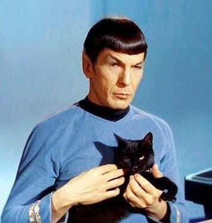
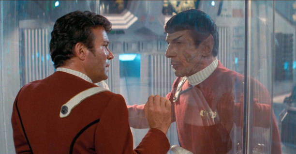
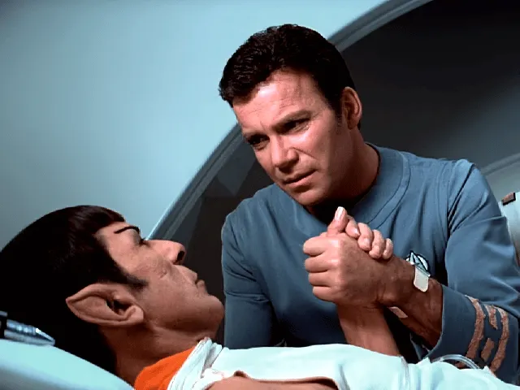

Spock is one of the main characters in the long existing franchise Star Trek, he is the first officer on the starship Enterprise. He is a vulcan,which sets him apart from the rest of the official crew, who are (mostly) human, sometimes the crew changes up.

Spock has a very close relationship with his captain James Tiberius Kirk. This is shown in various episodes on the original series, in the films and also in the novellization version, most notably the first Star Trek book. The following are multiple instances of tension between these two characters as portrayed in The Original Series:

